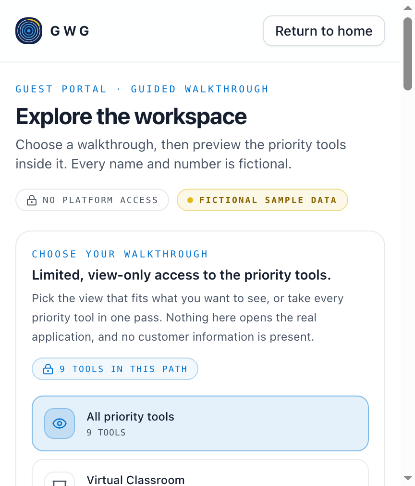
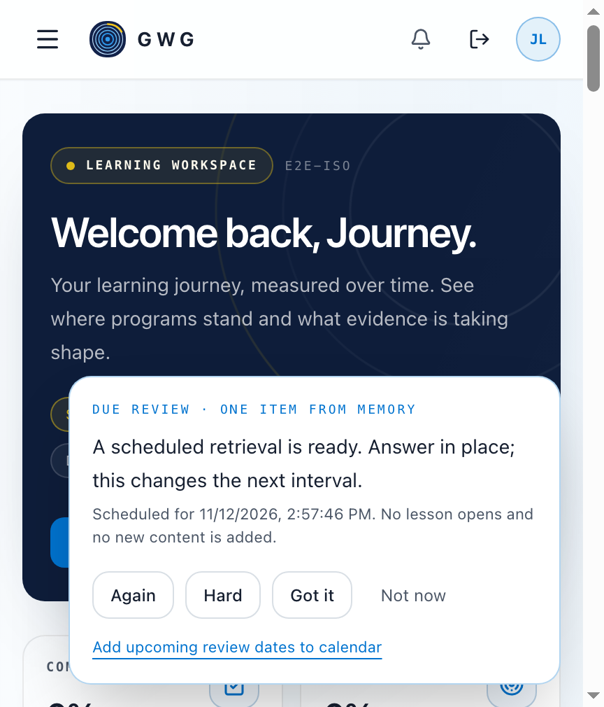
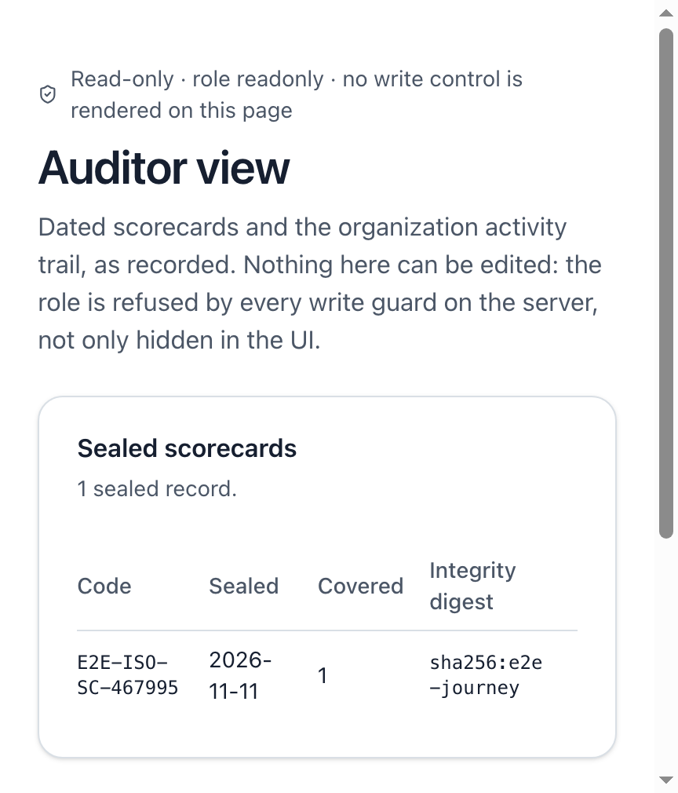

Workforce development infrastructure
Train for the work.
Prove the capability.
GWG connects structured programs, guided practice and review to a durable evidence trail — so organisations can see demonstrated capability, not attendance.
Join a session before you create an account
The guest surface shows how a facilitated classroom feels: a slide deck with presenter narration, a participant roster and a comprehension check — with the answer key deliberately withheld.

- Slide-by-slide walkthrough with narration text
- Sample roster showing participant context
- End-of-session check as a guest sees it
- No account, no learner record, no writable actions
A learning path that reacts to evidence
Once signed in, a learner sees programs, competencies, due reviews and reflection prompts. Review scheduling is deadline-aware; mastery is estimated from attempts, not assumed from completion.

- Programs mapped to competencies and practice
- Due reviews with snooze and deadline awareness
- Reflection summaries and working notes per skill
- Mastery probability surfaced alongside progress
Review outcomes without touching the data
Auditors and programme owners get an organisation-scoped, read-only view: sealed scorecards, evidence digests and an activity trail. No mutations, no cross-tenant visibility.

- Sealed scorecards with evidence digests
- Activity trail for review and verification
- Role-gated access with tenant scoping
- Read-only by construction
From programme design to defensible proof
Design the programme
Define competencies, practice items and the evidence each scorecard must carry.
Run the learning loop
Learners practise, reflect and return on a spaced schedule; attempts update mastery estimates.
Prove the outcome
Sealed scorecards and audit trails show what was demonstrated — reviewable, scoped and read-only.
See the full platform
This demo is a guided sample. A live walkthrough covers programme setup, the learner loop and your organisation's evidence model.